Kazuki Shin | CS 445: Project #2 Quilting
Best Example with sample, random, overlapping, and seam finding
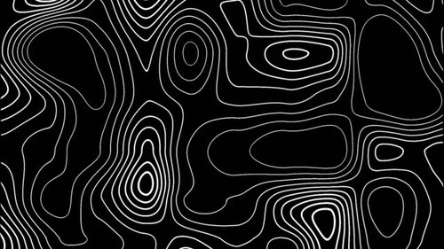
^ Sample Image
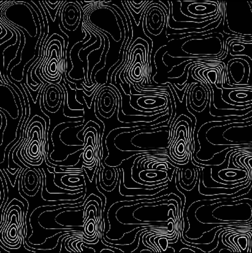
^ Random
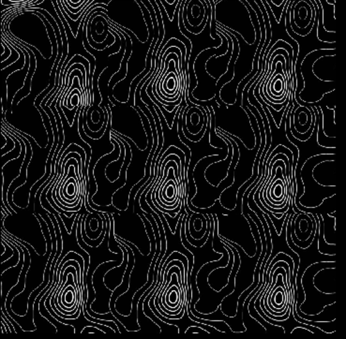
^ Quilt Simple
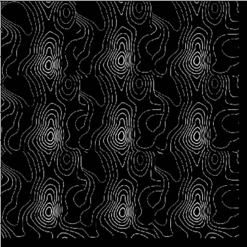
^ Seam Cut
Explaination of results for Best Example
My random function was very bad at creating the new texture as expected since there is no algorithm or
logic behind the choice of each patch. My overlapping result was alot better than random thanks to SSD,
however it is evident that many of the patches do not line up perfectly and the patches are visible. The
seam finding output image was close to perfect. The output texture looks smooth and natural thanks to the
cut function which finds the path of smallest cost. I found my particular sample to be challenging since it was a
black image with thin white lines so you could easily tell when the image did not line up. After some tweaking
of the parameters, the outputs were smooth.
4 Additional Images with Seam Finding
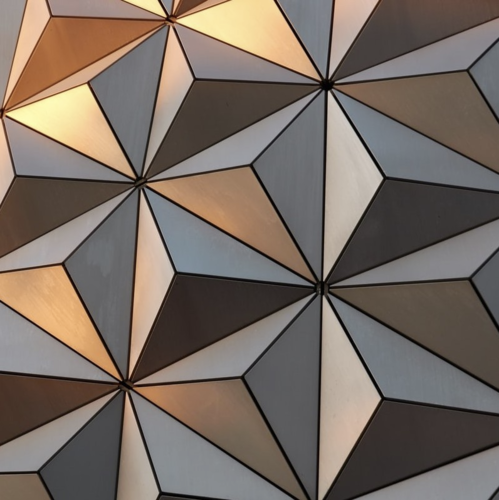
^ Sample #1
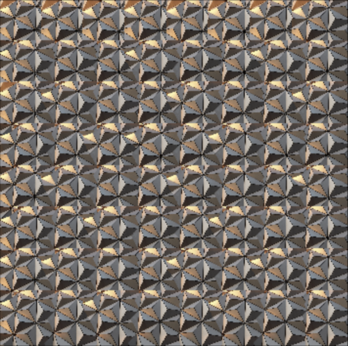
^ Seam #1
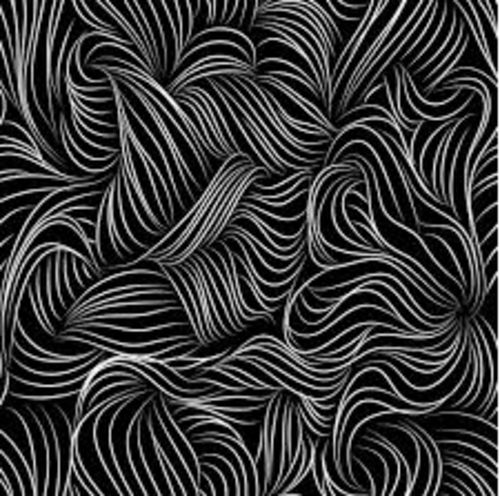
^ Sample #2
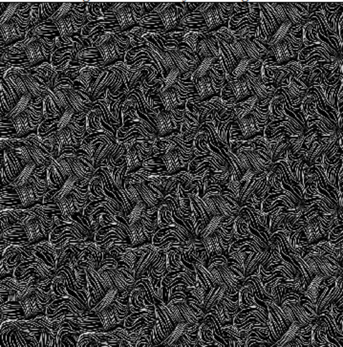
^ Seam #2
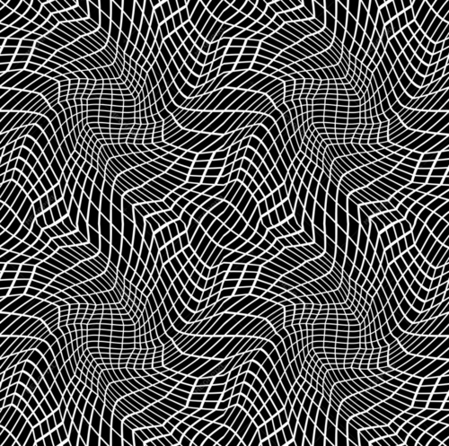
^ Sample #3
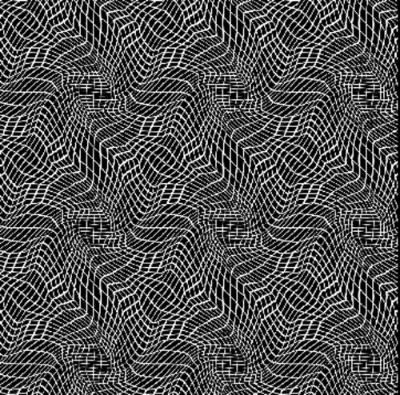
^ Seam #3
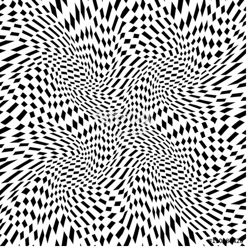
^ Sample #4
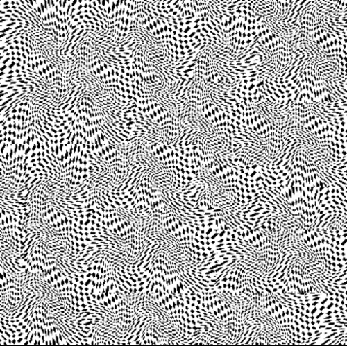
^ Seam #4
Explaination of Results
The images above take a sample image and quilt the output using cut. The cut function maps a path with
the lowest cost so that the quilting will look the smoothest. The SSD function is able to get the most similar
patch and overlay it onto the out image.
Seam Finding with minimum cost path
Left Side Image Template
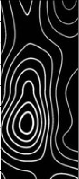
Right Side Sample Patch
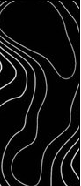
Shortest Path Mapped

Combined Result
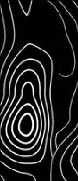
Part IV: Texture Transfer
Explaination of Texture Transfer
The texture transfer works by calculating the SSD between the image patch and sample path, the SSD between
image patch and target patch then summing the two values to create an image that has the look of the target Image
but the texture of the sample image.
Target Image 1
Sample Image 1
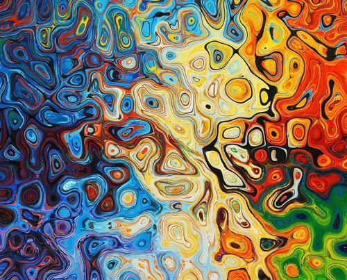
Output Image 1
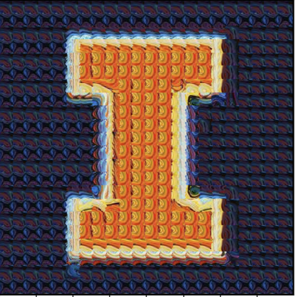
Target Image 2
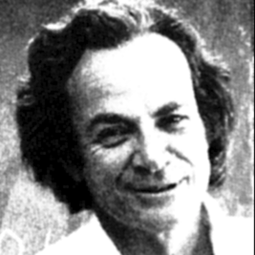
Sample Image 2
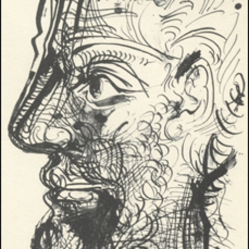
Output Image 2
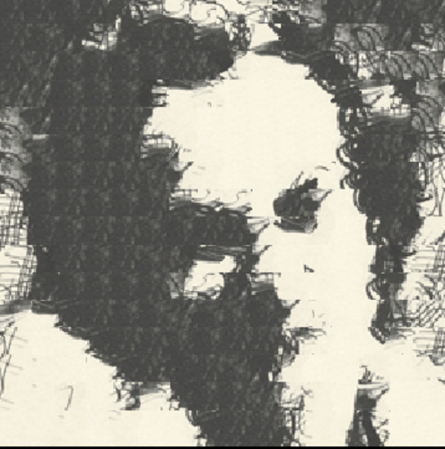